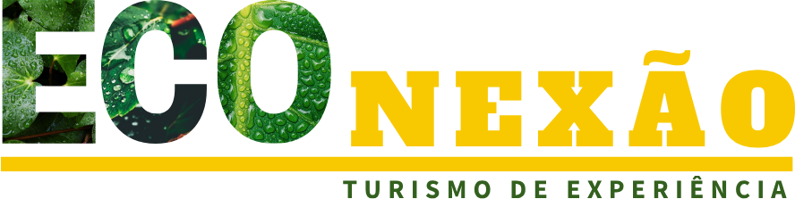
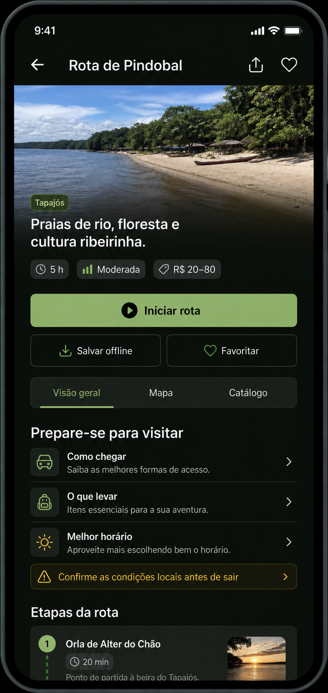

Visitantes montam o próprio quebra-cabeça
Acesso, retorno, custos, alertas, serviços e contatos vivem em canais diferentes.

Tapajós Negócios · 27–29 ago 2026Proposta de lançamento público do piloto
Rotas confiáveis que conectam visitantes, negócios e comunidades — durante a feira e depois dela.
O ponto de encontro
Projeções divulgadas para 2026A oportunidade
Turismo · economia local · confiançaInformação espalhada reduz confiança, atrasa decisões e deixa parte da oferta fora do caminho do visitante.
Acesso, retorno, custos, alertas, serviços e contatos vivem em canais diferentes.
Quem é essencial para a experiência pode permanecer invisível no momento da decisão.
Fonte, revisão, publicação e atualização exigem processo — não apenas uma lista.
A experiência ECOnexão
Uma jornada, três movimentosExplorar o território e escolher uma rota compatível com o perfil.
Entender acesso, duração, custos, itens necessários e condições locais.
Acompanhar etapas, mapa, apoio e atores locais — inclusive offline.
A rota como unidade econômica
Contexto gera relevânciaA rota-modelo
Uma rota vertical para provar conteúdo, navegação, operação e confiança.

Valor para a Tapajós Negócios
Inovação aplicada ao territórioA feira cria o encontro. A ECOnexão ajuda o encontro a produzir continuidade.
Ativação proposta
Presença · experiência · continuidadeApresentação de 10–12 minutos e convite para experimentar o piloto.
Demonstração assistida da Rota de Pindobal em aparelhos e tela principal.
Uma trilha autorizada que conduz o público da descoberta ao uso.
Encontro com atores e instituições para formar a rede pós-feira.
Experiência dentro do evento
Da curiosidade à continuidadeVê a proposta no palco, na entrada ou em um parceiro.
Lê o QR Code sem precisar criar conta.
Conhece Pindobal, preparação, etapas e atores.
Compartilha, salva ou inicia um contato qualificado.
Leva a experiência para além dos três dias da feira.
Ambição com responsabilidade
Promessa proporcional à prontidãoPlano acelerado
Foco · governança · portões de qualidadeFormato, responsáveis, espaço, palco e escopo público congelado.
Dados críticos, permissões, QR Codes, materiais e testes moderados.
Acessibilidade, conectividade, privacidade, ensaio e contingência.
Publicação aprovada, equipe treinada, ativação e monitoramento.
A decisão solicitada